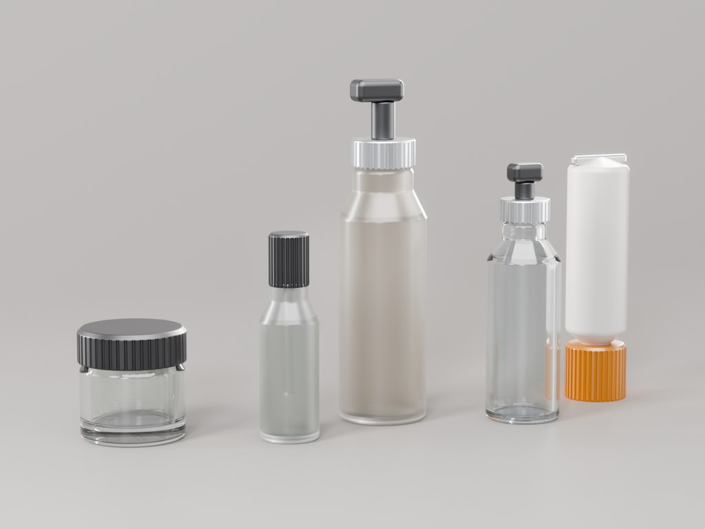
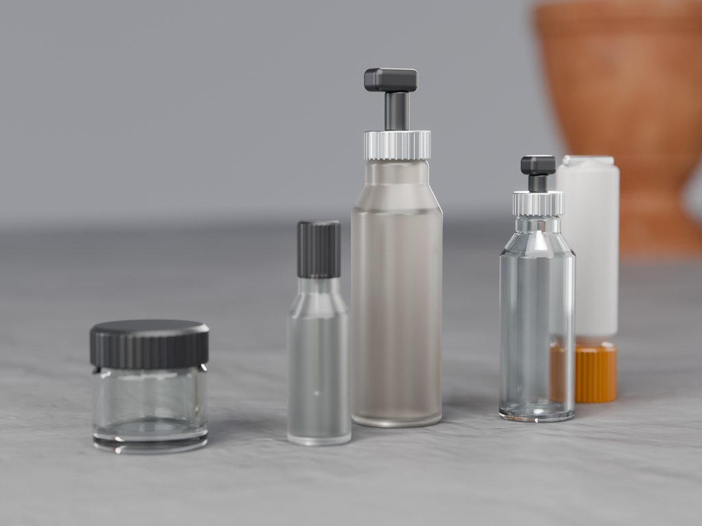
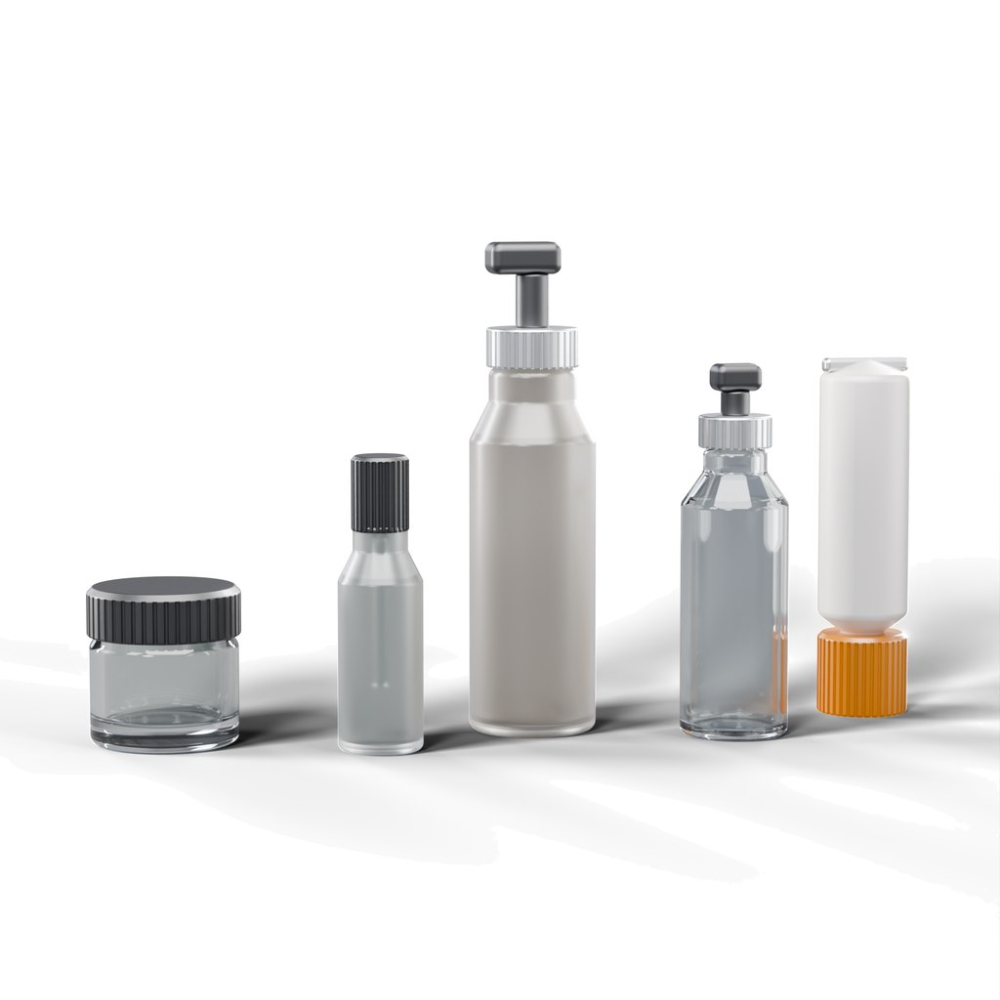
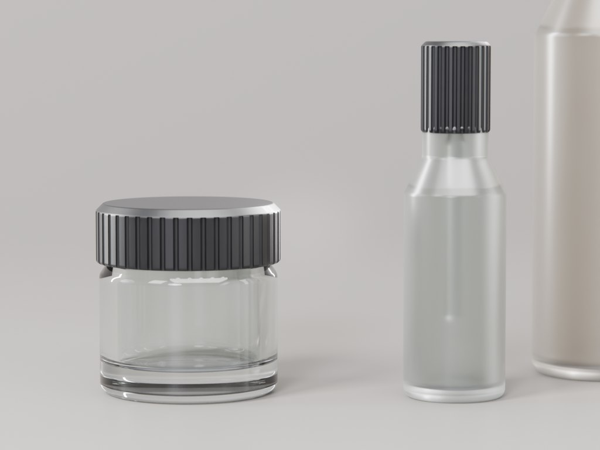
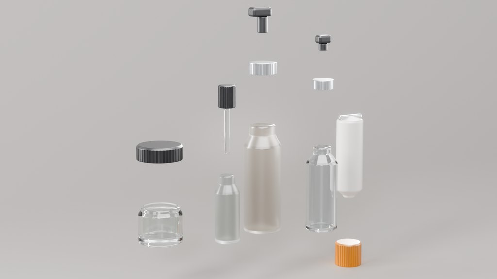

Cilt bakımı seti, render paketi
Beş ürün, tek ışık kurulumu, pazaryerine hazır
- 2026
- 3D modelleme ve render
- Konsept proje

Fotoğraflanmak için modellenmiş beş ürünlük bir cilt bakımı serisi: gerçek cam et kalınlığı, ışığı yakalayan tırtıklı kapaklar ve etiketin sarılabileceği temiz silindirik gövdeler. Aile çekimi, beyaz zeminli pazaryeri ana görseli ve makro olarak çekildi.
| Ürün sayısı | 5 (kavanoz, serum, pompa, sprey, tüp) |
|---|---|
| Parça sayısı | 14 |
| Krem kavanozu | 50 ml, 60 × 50 mm, 10 mm cam taban |
| Serum damlalık | 30 ml, kapakla 34 × 122 mm |
| Pompalı şişe | 150 ml, pompayla 52 × 201 mm |
| Cam et kalınlığı | 3,5–4 mm, modellenmiş |
| Dosyalar | 4K PNG · STEP · 3DM |
Bu proje neden var
Ürün render'larının çoğu aynı yerde tökezler: cam. Tek yüzey olarak, kalınlıksız modellenen bir şişe sabun köpüğü gibi kırılır ve göz bunu anında reddeder. Bu set, geometri dürüst olduğunda neyin değiştiğini göstermek için yapıldı.
Cam gibi davranan cam
Her gövde, döndürülmüş dış profilden döndürülmüş bir boşluğun çıkarılmasıyla oluştu: serum şişesinde 3,5 mm, pompalı şişede 4 mm et kalınlığı; kavanozda ise dipteki ağır mercek etkisini veren 10 mm masif cam taban. Damlalık pipeti serum şişesinin içinde duruyor ve rafta olacağı gibi cam boyunca kırılıyor.

Portföy için değil, ilanlar için
Ana görsel, pazaryerlerinin istediği gibi beyaz zeminde, ürün karenin yaklaşık %85'ini dolduracak biçimde ve kendi gölgesiyle yere basacak şekilde alındı. Gövdeler temiz dönel yüzeyler olduğu için görseller basit silindirik projeksiyonla giydiriliyor: yeni bir etiket yeni bir render demek, yeni bir model değil.


Teslim edilenler
Her açı için 4K görseller, beyaz zeminli pazaryeri ana görseli, aynı modelden alınmış renk ve malzeme varyantları ve parçalar üretilecek olursa STEP ile 3DM dosyaları.

Teslim edilenler
- Açı başına 4K görseller
- Beyaz zeminli pazaryeri ana görseli
- Renk ve malzeme varyantları
- STEP ve 3DM kaynak geometri